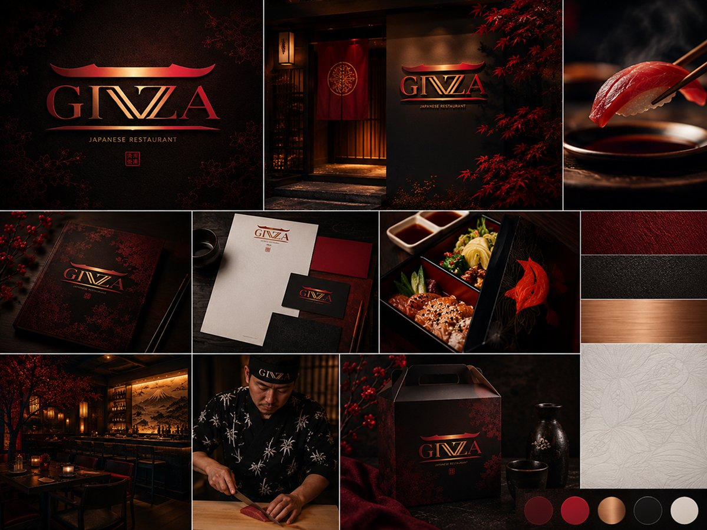
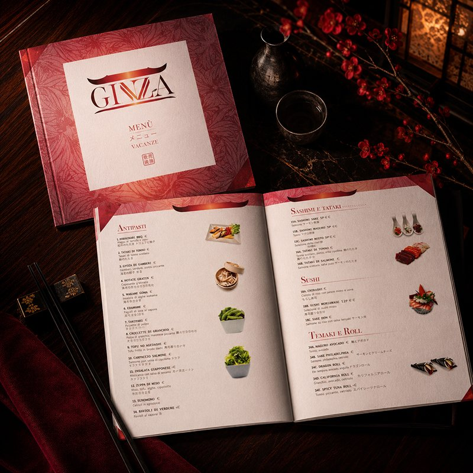
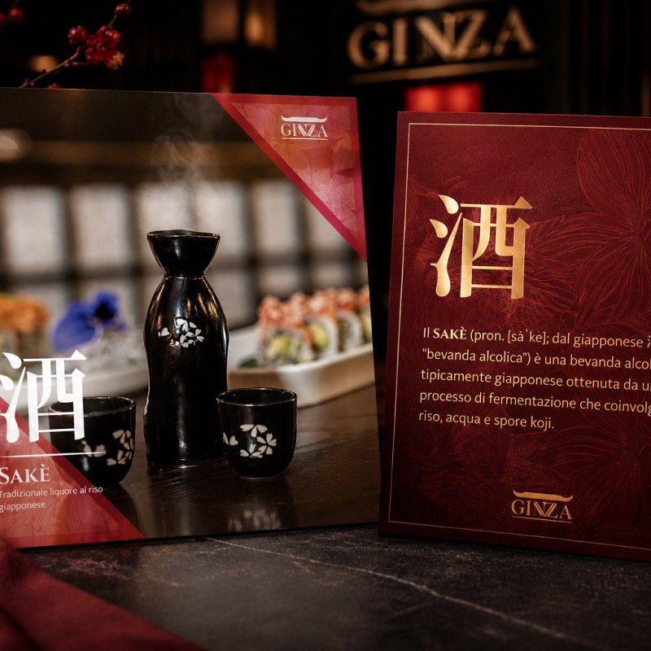
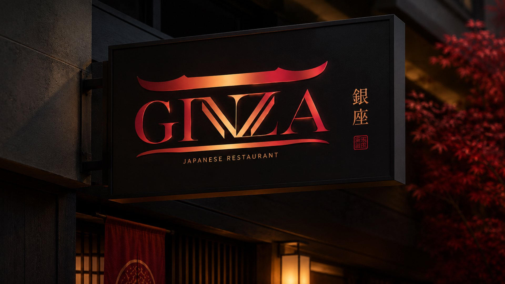

Ginza
Logo design and brand identity — Japanese restaurant

A new opening, an identity from scratch.
The project was commissioned by Nuxi s.r.l., a consulting firm that entrusted me with the visual identity design of Ginza, a new Japanese restaurant opening in Cagliari.
The need was to build a coherent and recognisable visual language from the start — from the logo to social presence — capable of communicating the restaurant's identity in an essential and functional way.
"The pagoda not as ornament — as structure. The letters of the name become the columns that support the roof. The logo is already an architecture."


The sign is born from the extrapolation of the pagoda's form — an icon of Japanese culture. The logotype in Kenjo literally becomes the load-bearing columns: the letters of Ginza support the pagoda's roof, recreating the architectural structure of the original floor plan. Not a symbol overlaid on the name — a single form in which text and icon are the same thing.
The palette works on a gradient of warm colours — deep browns, red, orange yellow — echoing the chromatic heart of the Japanese flag. A decisive but never aggressive gradient, like the flavours of the cuisine it represents. Kenjo is paired with Mukta, a modern, versatile and humanist family, for functional system declinations. The brand extends into social assets: frames and watermarks for photographs, text carousels for digital communication — a system ready to occupy every surface with coherence and recognisability.
The work for Ginza didn't stop at the identity. From the same visual root, three distinct menus were designed — à la carte, all you can eat and bento — each with a different usage logic but perfectly coherent with the parent system.




